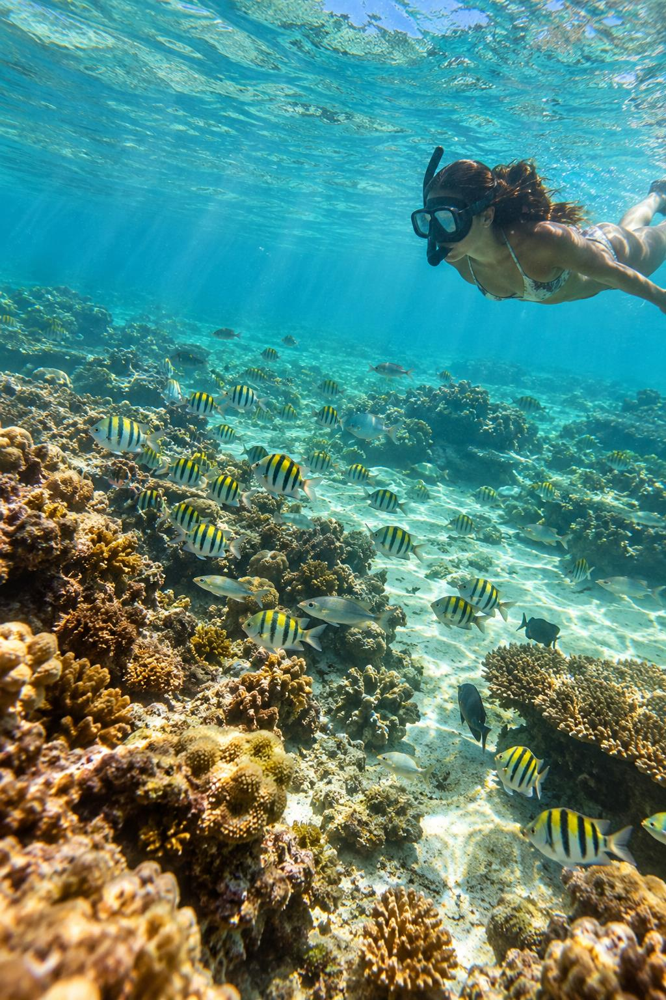

Recifes de corais
Águas claras para observar de perto a vida que existe sob a superfície.
PONTA DE MANGUE • MARAGOGI • ALAGOAS
Duas horas entre recifes de corais e águas cristalinas, com guia local, mergulho com peixinhos e fotos inclusas.
A EXPERIÊNCIA
Uma saída guiada para remar com calma, conhecer os recifes de corais, entrar na água e guardar a viagem também nas fotos.
Águas claras para observar de perto a vida que existe sob a superfície.
Hora de entrar na água, respirar fundo e curtir o cenário.
Nós registramos seus momentos e enviamos as imagens após o passeio.

RECIFES E VIDA MARINHA
O passeio combina caiaque, paradas para mergulho e tempo para aproveitar Ponta de Mangue sem correria.
CONHEÇA O PASSEIO ↓UMA EXPERIÊNCIA COMPLETA
Uma única experiência guiada, pensada para quem quer viver os recifes, remar e mergulhar com tranquilidade.
ONDE ESTAMOS
A Família dos Anjos Náutica fica em Ponta de Mangue, Maragogi. Abra a localização exata e venha direto até nós.
⌖ ABRIR NO GOOGLE MAPS ↗